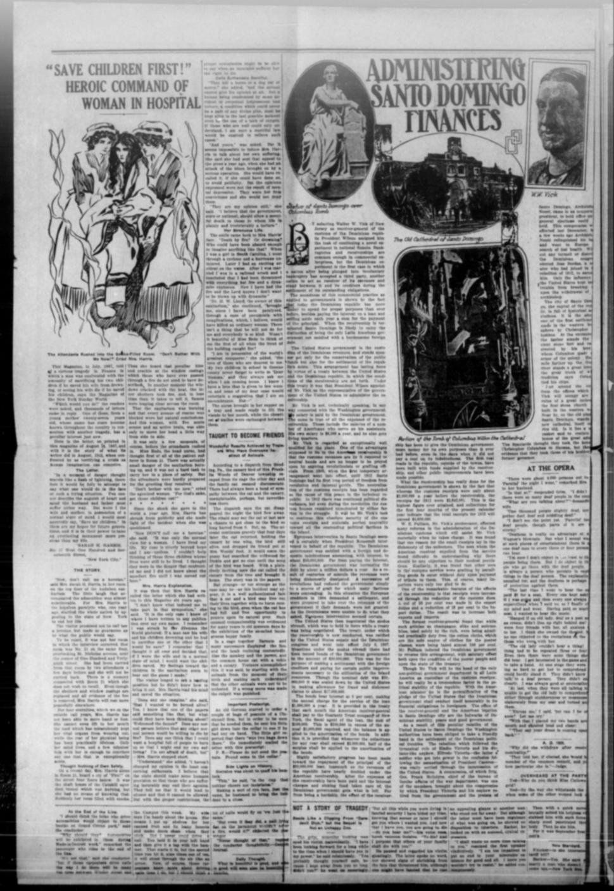
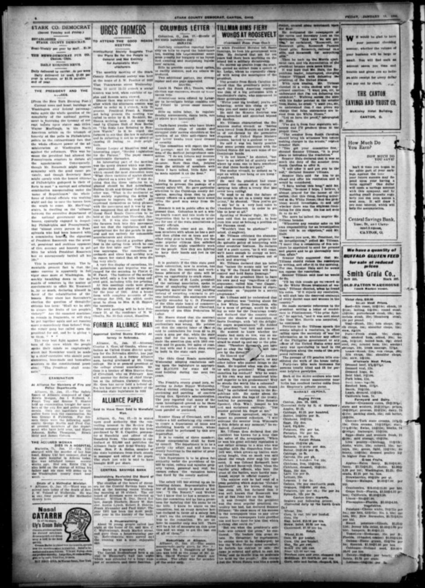

The Customs ReceivershipLa receptoría de aduanas
The eraLa era
An Agreement Becomes a TreatyUn acuerdo se convierte en tratado
From 1905 the United States collected the Dominican customs, first by agreement, then by treaty in 1907: an American receiver-general divided the revenue between the Dominican government and its foreign creditors. The mechanics are documented to the dollar: the 1905 modus vivendi deposited 55 percent of receipts in New York, where three million dollars accumulated, and the treaty consolidated the debts into one twenty-million-dollar bond issue at five percent. President Morales, who had entered the arrangement hoping for American support, was impeached and deported in January 1906; the collections continued under Caceres. Dominican opponents warned that ratification would give the United States an unshakable grip; Senator Tillman called enforcing the unratified agreement unconstitutional usurpation.
Desde 1905, Estados Unidos cobró las aduanas dominicanas, primero por acuerdo y luego por tratado en 1907: un receptor general estadounidense dividía los ingresos entre el gobierno dominicano y sus acreedores extranjeros. La mecánica está documentada al dólar: el modus vivendi de 1905 depositó el 55 por ciento de los ingresos en Nueva York, donde se acumularon tres millones de dólares, y el tratado consolidó las deudas en una sola emisión de bonos de veinte millones al cinco por ciento. El presidente Morales, que había entrado en el arreglo esperando apoyo estadounidense, fue sometido a juicio político y deportado en enero de 1906; el cobro continuó bajo Cáceres. Los opositores dominicanos advirtieron que la ratificación daría a Estados Unidos un dominio inquebrantable; el senador Tillman calificó de usurpación inconstitucional la ejecución del acuerdo no ratificado.
The Quiet Years and Their EndLos años de calma y su fin
On paper it worked, and the papers said so. Receivership reports described irrigation works, wireless stations and an agricultural school; President Taft called the collections uneventful even as receipts fell, and Washington held the Dominican arrangement up as the model for treaties with Nicaragua and Honduras. The quiet ended in November 1911, when Caceres was shot and died in the American legation: the War Department called it the first serious disturbance in four years, and credited the customs takeover for the calm.
En el papel funcionó, y los periódicos lo dijeron. Los informes de la receptoría describían obras de irrigación, estaciones inalámbricas y una escuela de agricultura; el presidente Taft calificó el cobro de carente de incidentes aun cuando los ingresos bajaban, y Washington presentaba el arreglo dominicano como el modelo para tratados con Nicaragua y Honduras. La calma terminó en noviembre de 1911, cuando Cáceres fue baleado y murió en la legación estadounidense: el Departamento de Guerra lo llamó el primer disturbio serio en cuatro años y atribuyó la calma a la toma de las aduanas.
Revolution ReturnsVuelve la revolución
The receivership could hold the customs houses; it could not hold the peace. Revolution spread under President Eladio Victoria through 1912, American commissioners cruised the north coast aboard a transport carrying marines, and Victoria resigned that November. Archbishop Nouel became provisional president under a compromise the commissioners had proposed. In 1913 President Bordas's gunboats shelled rebel-held Puerto Plata while Washington sent a cruiser and assured him of its moral support.
La receptoría podía retener las aduanas; no podía retener la paz. La revolución se extendió bajo el presidente Eladio Victoria durante 1912, los comisionados estadounidenses recorrieron la costa norte a bordo de un transporte que llevaba marines, y Victoria renunció ese noviembre. El arzobispo Nouel se convirtió en presidente provisional bajo un compromiso que los comisionados habían propuesto. En 1913, las cañoneras del presidente Bordas bombardearon Puerto Plata, en manos rebeldes, mientras Washington enviaba un crucero y le aseguraba su apoyo moral.
Washington Chooses the GovernmentWashington escoge el gobierno
Supervision then widened from revenue to government itself. In July 1914 officials in Washington spoke of enlarging the customs administrators' authority, and that August a peace commission carried President Wilson's plan to the warring factions with a regiment of marines on hand to lend it weight. Bordas yielded, Ramon Baez became provisional president, and the election that followed ran under an American commission: Juan Isidro Jiminez, the exile of the succession war, took the oath in December 1914. Sovereignty, Dominicans had learned, could be signed away one revenue stream at a time.
La supervisión se amplió entonces de los ingresos al propio gobierno. En julio de 1914, funcionarios en Washington hablaron de ampliar la autoridad de los administradores de aduanas, y ese agosto una comisión de paz llevó el plan del presidente Wilson a las facciones en guerra con un regimiento de marines presente para darle peso. Bordas cedió, Ramón Báez se convirtió en presidente provisional, y la elección que siguió se realizó bajo una comisión estadounidense: Juan Isidro Jiminez, el exiliado de la guerra de sucesión, prestó juramento en diciembre de 1914. La soberanía, habían aprendido los dominicanos, podía entregarse un ingreso a la vez.
PlatesLáminas

Treaty Ratified by San Domingo

Administering Santo Domingo Finances

Tillman Aims Fiery Words at Roosevelt
Key articlesArtículos clave
Treaty Ratified by San DomingoTratado ratificado por Santo Domingo
The Birmingham Age-Herald reported that the 1905 modus vivendi deposited 55 percent of Dominican customs receipts in New York, accumulating $3,000,000 despite the overthrow of President Morales and the elevation of General Caceres. Secretary Root later recast the pending treaty after Dominican Finance Minister Federico Velasquez negotiated a 50 percent cash settlement reduction with foreign creditors. A New York banking firm agreed to advance the necessary funds by accepting $20,000,000 in 50-year 5 percent bonds, consolidating all foreign debts into a single entity.
The Birmingham Age-Herald informó que el modus vivendi de 1905 depositaba el 55 por ciento de los ingresos de aduanas dominicanos en Nueva York, acumulando 3.000.000 de dólares a pesar del derrocamiento del presidente Morales y la asunción del general Cáceres. Más tarde, el secretario Root reformuló el tratado pendiente después de que el ministro de Hacienda dominicano, Federico Velásquez, negociara con los acreedores extranjeros una quita del 50 por ciento mediante pago en efectivo. Una firma bancaria de Nueva York acordó adelantar los fondos necesarios aceptando 20.000.000 de dólares en bonos a 50 años al 5 por ciento, consolidando todas las deudas externas en una sola obligación.
Administering Santo Domingo FinancesLa administración de las finanzas de Santo Domingo
It says the removal of the customs revenues to neutral hands gave Santo Domingo its first long period of freedom from revolution, from 1905 to 1912, and recounts how European creditors in 1904 demanded settlement of a debt of about $30,000,000, leading to the modus vivendi, the treaty that took effect on July 8, 1907, and a $20,000,000 bond issue.
Este artículo explica que el gobierno de los Estados Unidos es el custodio de los ingresos dominicanos en virtud de un tratado, garante de la conservación de los fondos públicos y del arreglo de las deudas de la república, y que el presidente Wilson nombró al señor Vick para administrar la receptoría, con un sueldo de 6.500 dólares al año pagado por el gobierno dominicano. Dice que el traslado de los ingresos aduaneros a manos neutrales dio a Santo Domingo su primer largo período sin revoluciones, de 1905 a 1912, y cuenta cómo los acreedores europeos exigieron en 1904 el arreglo de una deuda de unos 30.000.000 de dólares, lo que llevó al modus vivendi, al tratado que entró en vigor el 8 de julio de 1907 y a una emisión de bonos de 20.000.000 de dólares.
Tillman Aims Fiery Words at RooseveltTillman lanza palabras encendidas contra Roosevelt
The Stark County Democrat reported on a Senate speech by Senator Benjamin Tillman condemning President Roosevelt's Dominican policy and the enforcement of the unratified customs treaty. Tillman criticized the administration for prioritizing European bondholders and ridiculed the executive modus vivendi as an unconstitutional usurpation of Senate authority. Warning against imperial expansion, Tillman asserted that unless the Senate firmly rejected the administration's actions, the United States would permanently dominate and occupy Santo Domingo.
El Stark County Democrat informó sobre un discurso en el Senado del senador Benjamin Tillman, en el que condenó la política dominicana del presidente Roosevelt y la aplicación del tratado aduanero no ratificado. Tillman criticó al gobierno por priorizar a los tenedores de bonos europeos y ridiculizó el modus vivendi ejecutivo como una usurpación inconstitucional de la autoridad del Senado. Al advertir contra la expansión imperialista, Tillman aseveró que, a menos que el Senado rechazara firmemente las acciones del gobierno, los Estados Unidos dominarían y ocuparían de forma permanente a Santo Domingo.
ErasEras · The era's articlesLos artículos de la era · On the timelineEn la cronología